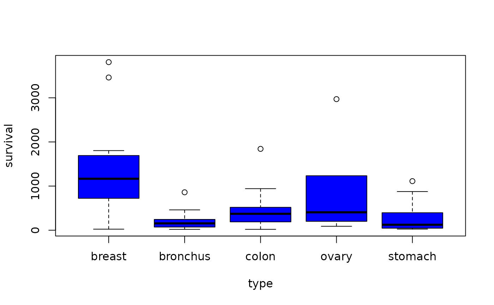
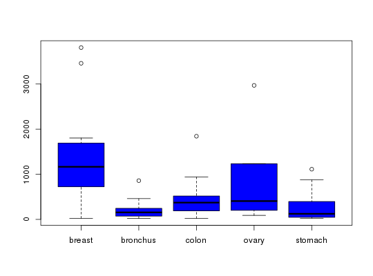

R/BSDA-package.R
Cancer.RdData for Exercises 6.55 and 6.64
Cancer
A data frame/tibble with 64 observations on two variables
survival time (in days) of terminal patients treated with vitamin C
a factor indicating type of cancer with levels
breast, bronchus, colon, ovary, and
stomach
Cameron, E and Pauling, L. 1978. “Supplemental Ascorbate in the Supportive Treatment of Cancer.” Proceedings of the National Academy of Science, 75, 4538-4542.
Kitchens, L. J. (2003) Basic Statistics and Data Analysis. Pacific Grove, CA: Brooks/Cole, a division of Thomson Learning.
stomach <- Cancer$survival[Cancer$type == "stomach"] bronchus <- Cancer$survival[Cancer$type == "bronchus"] boxplot(stomach, ylab = "Days")#> #> One-sample Sign-Test #> #> data: stomach #> s = 8, p-value = 0.2905 #> alternative hypothesis: true median is greater than 100 #> 95 percent confidence interval: #> 46.22098 Inf #> sample estimates: #> median of x #> 124 #> #> Achieved and Interpolated Confidence Intervals: #> #> Conf.Level L.E.pt U.E.pt #> Lower Achieved CI 0.8666 51.000 Inf #> Interpolated CI 0.9500 46.221 Inf #> Upper Achieved CI 0.9539 46.000 Inf #>#> #> One-sample Sign-Test #> #> data: bronchus #> s = 11, p-value = 0.1662 #> alternative hypothesis: true median is greater than 100 #> 95 percent confidence interval: #> 76.85721 Inf #> sample estimates: #> median of x #> 155 #> #> Achieved and Interpolated Confidence Intervals: #> #> Conf.Level L.E.pt U.E.pt #> Lower Achieved CI 0.9283 81.0000 Inf #> Interpolated CI 0.9500 76.8572 Inf #> Upper Achieved CI 0.9755 72.0000 Inf #>